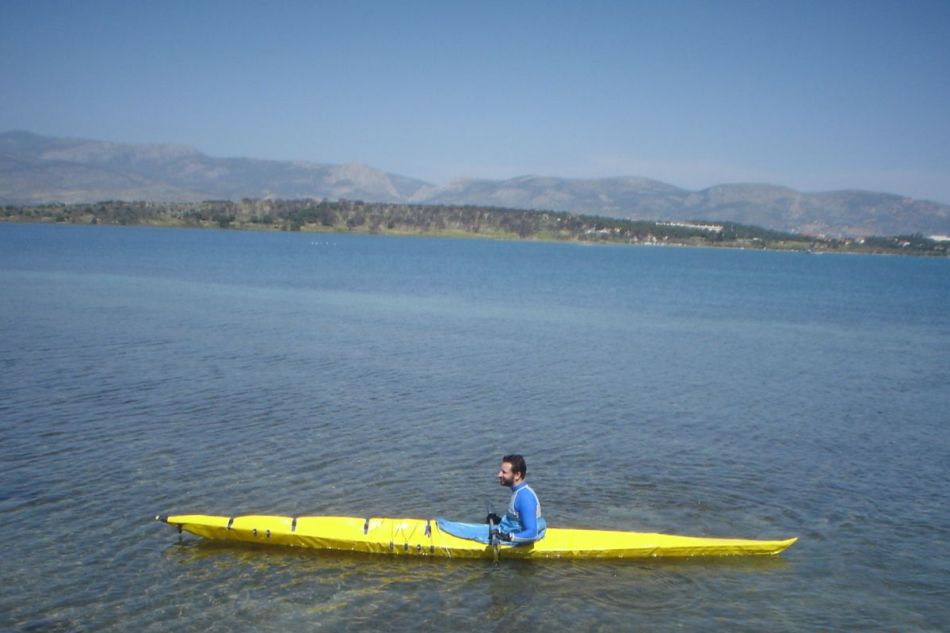

| Sea Tour 17 by Nikiforos (GR) | Menu Previous Page Next Page |
|

Nikiforos, from Greece, paddles his Sea Tour 17 folder. It has arched inwales, HDPE stem plates, roll up fore deck, and a two piece wooden coaming permanently attached to the skin.
|
|